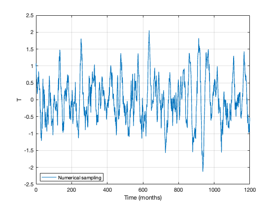
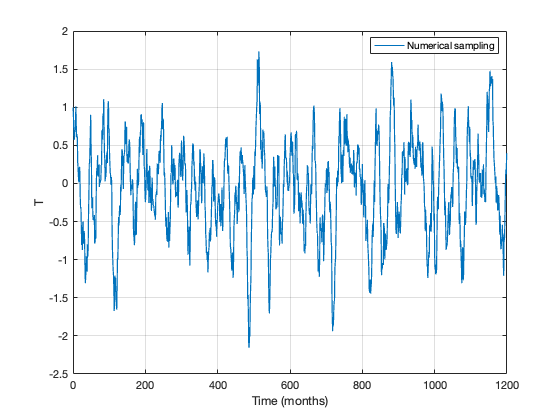

RO simulations using CRO solver#
This tutorial illustrates how to use the mCRO to solve the RO model.
This notebook was contributed by Soong-Ki Kim.
RO Simulation Setup#
This is the simplest configuration for the RO model, using:
White noise:
n_T = 1,n_h = 1.Linear system: nonlinear terms (
b_T,c_T,d_T,b_h) are zero.Additive noise only: no multiplicative component (
n_g = 2).
The RO equation is written as:
\(\displaystyle \frac{dT}{dt} = RT + F_{1}h + \sigma_{T}w_{T}\)
\(\displaystyle \frac{dh}{dt} = −\varepsilon{h} − F_{2}T + \sigma_{h}w_{h}\)
The following block sets parameters for the RO simulation.
[ ]:
R=-0.05; % dT/dt=R*T (month^-1)
F1=0.02; % dT/dt=F1*h (K m^-1 month^-1)
F2=0.9; % dh/dt=-F2*T (m K^-1 month^-1)
epsilon=0.03; % dh/dt=-epsilon*h (month^-1)
b_T=0.0; % dT/dt=b_T*T^2 (K^-1 month^-1)
c_T=0.0; % dT/dt=-c_T*T^3 (K^-2 month^-1)
d_T=0.0; % dT/dt=d_T*T*h (m^-1 month^-1)
b_h=0.0; % dh/dt=-b_h*T^2 (K^-2 m month^-1)
sigma_T=0.2; % T-noise amplitude
sigma_h=1.2; % h-noise amplitude
B=0.0; % multiplicative-noise coefficient; unused for additive noise
m_T=1.0; % red-noise damping; unused for white noise
m_h=1.0; % red-noise damping; unused for white noise
n_T=1; % 0: red noise, 1: white noise
n_h=1; % 0: red noise, 1: white noise
n_g=2; % 0: multiplicative, 1: multiplicative-H, 2: additive
par={R;F1;F2;epsilon;b_T;c_T;d_T;b_h; ...
sigma_T;sigma_h;B;m_T;m_h;n_T;n_h;n_g};
The following block sets additional options for the RO simulation.
[ ]:
IC=[1.0;0.0]; % Initial conditions for T and h
N=12*100; % Simulation length in months (100 years)
NE=2; % Number of ensemble members
The RO simulation can be run by setting four settings set above: par, IC, N, and NE.
The following block sets additional optional settings for the RO simulation.
The user may skip specifying these options. If the user doesn’t specify these options, the RO simulation runs with the default settings.
[ ]:
NM="EH"; % "EH" (Euler-Heun, default) or "EM" (Euler-Maruyama)
dt=0.1; % Numerical time step in months (default = 0.1)
saveat=1.0; % Output interval in months (default = 1.0)
savemethod="sampling"; % "sampling" (default) or "mean"
EF={0.0;0.0}; % External forcing {E_T; E_h}; default is zero forcing
noise_custom=999; % Custom noise specification / random seed
% noise_custom=[] uses internally generated noise.
% A scalar is used as a random seed for reproducible noise.
% A user-supplied matrix must have size (round(N/dt)-1) x 4.
RO Simulations#
Basic Usage#
The simplest solver call uses only par, IC, N, and NE:
[ ]:
[T_ro,h_ro,noise]=RO_solver(par,IC,N,NE);
T_ro and h_ro have shape [time × ensemble]. The third output contains the noise time series used by the integration.
[ ]:
% Example 3-1. Solve RO with default settings
[T_ro,h_ro,noise]=RO_solver(par,IC,N,NE);
time_axis=0:(size(T_ro,1)-1);
num_en=1; % first ensemble member
figure;
plot(time_axis,T_ro(:,num_en),'LineWidth',1.2, ...
'DisplayName','Numerical sampling')
xlabel('Time (months)')
ylabel('T')
legend('Location','best')
grid on

Advanced Usage#
Optional arguments can be added sequentially for more control over the numerical integration:
[ ]:
[T_ro,h_ro,noise]=RO_solver(par,IC,N,NE,NM);
[T_ro,h_ro,noise]=RO_solver(par,IC,N,NE,NM,dt);
[T_ro,h_ro,noise]=RO_solver(par,IC,N,NE,NM,dt,saveat);
[T_ro,h_ro,noise]=RO_solver(par,IC,N,NE,NM,dt,saveat,savemethod);
[T_ro,h_ro,noise]=RO_solver(par,IC,N,NE,NM,dt,saveat,savemethod,EF);
[T_ro,h_ro,noise]=RO_solver(par,IC,N,NE,NM,dt,saveat,savemethod,EF,noise_custom);
Refer to the setup section above for the meaning of each optional argument.
[ ]:
% Example 3-2. Solve RO with user-specified settings
[T_ro,h_ro,noise]=RO_solver( ...
par,IC,N,NE,NM,dt,saveat,savemethod,EF,noise_custom);
time_axis=0:saveat:(round(N/saveat)-1)*saveat;
num_en=1; % first ensemble member
figure;
plot(time_axis,T_ro(:,num_en),'LineWidth',1.2, ...
'DisplayName','Numerical sampling')
xlabel('Time (months)')
ylabel('T')
legend('Location','best')
grid on
